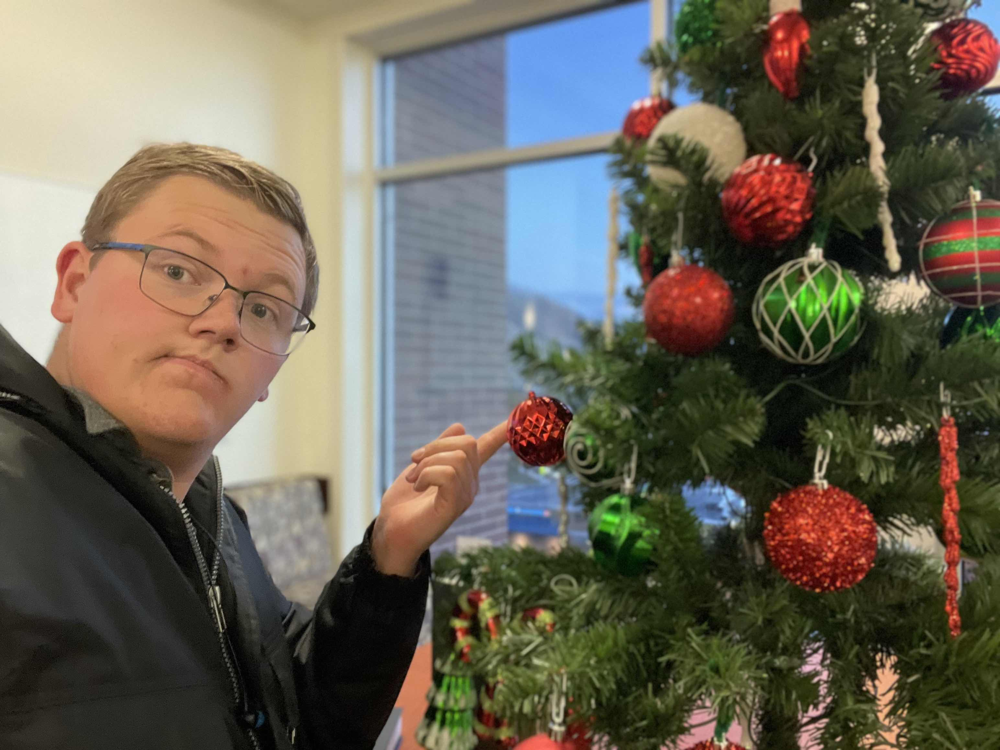

MAYBE
But I'm not sure ¯\_(ツ)_/¯
The world seems increasingly divided.
Yet while Christmas should be something that unites us, the start of the Christmas season is often a source of contention.
That is why I am on a quest to find the true start of Christmas.
And I need your help!
You can start by taking the offical survey and letting your opinion be counted
Then, share it with your friends.
More info and survey results will be posted here as time moves on.
And also hopefully the website improves too